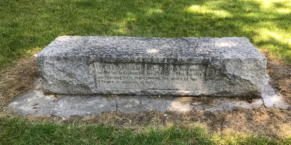
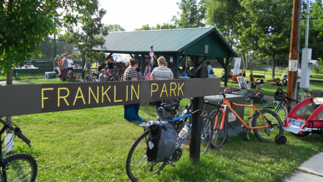

This Camp Fire Ceremonial Circle is named "Cholentit", meaning "little bird"
Mayor Ralph Arnold had this council fire ring built in 1934 for Camp Fire Girls and other groups, shortly after his daughter, Lucile, age 12, died. She had been an active member of the Camp Fire Girls at Paxson School. Lucile's Camp Fire friends dedicated the council ring to her and planted 12 juniper trees in a circle around the ring. Camp Fire groups from Paxson, Franklin and Jefferson rededicated the ring in 1971 replacing trees and repairing the fireplaces.

While the ceremonial circle and fireplaces are no longer standing the tribute to Lucile remains, as do many of the Juniper trees planted in her honor.

We are thrilled to be connecting with our history at Franklin Park and to the children at Franklin Elementary. It means the world to us that we will be a closer part of this community once again.